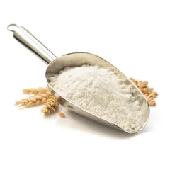

Recette de cannelés
Ingrédients
Sucre en poudre: 200 grams
Lait: 50 cl

Farine: 100 grams
Farine: 100 grams
Gousse de vanille: 1/2 gousse

Rhum: 3 spoons
Jaune d'oeuf: 2 units

Beurre: 25 grams

Oeufs entiers: 2 units
Temps
- Total: 70 minutes
- Préparation: 10 minutes
- Repos: 1440 minutes
- Cuisson: 60 minutes
Préparation
ÉTAPE 1
La veille : faire bouillir le lait avec la vanille et le beurre.
ÉTAPE 2
Pendant ce temps, mélanger la farine, le sucre puis incorporer les
oeufs d'un seul coup, verser ensuite le lait bouillant.
ÉTAPE 3
Mélanger doucement afin d'obtenir une pâte fluide comme une pâte à
crêpes, laisser refroidir, puis ajouter le rhum.
ÉTAPE 4
Placer au réfrigérateur 24 heures au minimum, 48 heures au maximum.
ÉTAPE 5
Le jour J : sortir la pâte du frigo au moins une heure avant la
cuisson.
ÉTAPE 6
Préchauffer le four à thermostat 9 (270°C).
ÉTAPE 7
Verser la pâte dans les moules, en ne les remplissant qu'aux 3/4:
poser les moules sur une tôle, et cuire à th. 9 pendant 5 minutes,
puis baisser le thermostat à 6 (180°C) et continuer la cuisson
pendant 1 heure (au moins, cela dépend de votre four, chez moi ça
prend 1h20!): le cannelé doit avoir une croûte brune et un intérieur
bien moelleux.
ÉTAPE 8
Démouler encore chaud.